The Rmarkdown for this class is on github
Goals for this class
- Learn how to make a heat map using
pheatmap - Understand how data is generally processed before making a heat map, understand what interpretations can be made given the processing.
- Learn how to change the aesthetics of a heat map
- Learn how to visualize and access clustering information from the heat map
Load packages
Download files
Before we get started, let’s download all of the files you will need for the next three classes.
# conditionally download all of the files used in rmarkdown from github
source("https://raw.githubusercontent.com/rnabioco/bmsc-7810-pbda/main/_posts/2023-12-08-class-8-matricies/download_files.R")Making a heatmap
Today we are going to continue working with the same data we used to talk about matrices and clustering, the top 100 boy and girl names by state for 2020.
We’ve loaded in both the boy and the girl names as separate matrices, we can combine these using rbind to bind the rows
names_mat <- rbind(male_names_mat, female_names_mat)To make a heatmap, we will use the pheatmap package
pheatmap(names_mat)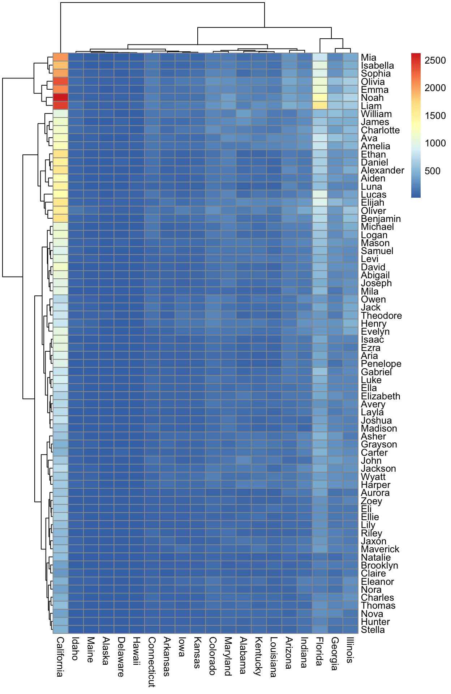
Notice here we can only see the names for California
Cleaning up by normalizing values
It’s pretty hard to see much structure in the data just using the raw values. Let’s try with our normalized values
You can see that when we try to normalize the values by dividing each number by the total number for the state, the trends in the data are much more clear and we don’t only see the data for California.
Cleaning up by scaling values
Another popular way to normalize the data for a heatmap is called a z-score. This is also know a mean-centered scaled data. The z-score is calculated as follows
Where x is each value \(\mu\) is the mean for the values and \(\sigma\) is the standard deviation for the values. Here, \(x - \mu\) is called “centering” and dividing by \(\sigma\) is called “scaling”
In R, we can scale the data using the scale function. Scaling is done on the columns, so here we can use the original matrix without any transformations
scale takes 3 arguments
x - a numeric matrix(like object).
center - either a logical value or numeric-alike vector of length equal to the
number of columns of x, where ‘numeric-alike’ means that as.numeric(.) will be
applied successfully if is.numeric(.) is not true.
scale - either a logical value or a numeric-alike vector of length equal to the
number of columns of x.The center refers to \(x - \mu\) from the equation above and scale refers to dividing by \(\sigma\). We will set both to be true to be a z-score.
scaled_mat <- scale(names_mat, scale = TRUE, center = TRUE)pheatmap(scaled_mat)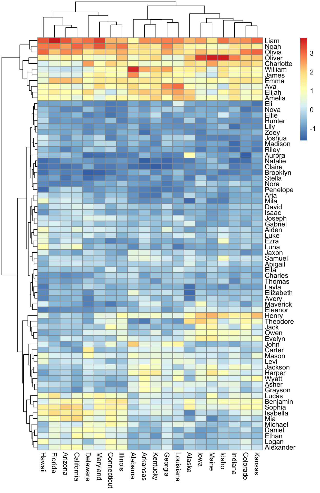
Notice how we again can see more structure in the data.
The scale shows both negative and positive values. Negative values had counts less than the mean, positive values had counts above the mean, and 0 means the value was equal to the mean. An important note here, values that are negative do not mean they were zero. For example, the scaled value for “Grayson” in California is negative:
scaled_mat["Grayson", "California"][1] -1.043828but there are still several hundred individuals named “Grayson” in California.
names_mat["Grayson", "California"][1] 453Note if you want a z-score of gene expression data, you will want to center and scale by the genes not the samples. Most gene expression data is stored as gene x sample so you will likely need to transform the matrix before scaling:
scaled_mat <- t(scale(t(unscaled_mat), scale = TRUE, center = TRUE))Exercise Looking at the three heatmaps, what is the most popular name? What heatmap is easiest to interpret?
Changing the color palette
The default color palette for pheatmap isn’t always the color palette you want. One color palette I like is the magma color from the viridis package. To use this package you can just call any of the color functions. and provide the number of colors you want in the palette. We will use the magma function below.
You can also add custom color palettes using colorRampPalette. This creates a function to generate a color palette with your colors for any number of values:
color_function <- colorRampPalette(c("navy", "white", "red"))
color_functionfunction (n)
{
x <- ramp(seq.int(0, 1, length.out = n))
if (ncol(x) == 4L)
rgb(x[, 1L], x[, 2L], x[, 3L], x[, 4L], maxColorValue = 255)
else rgb(x[, 1L], x[, 2L], x[, 3L], maxColorValue = 255)
}
<bytecode: 0x7fdaba45bb70>
<environment: 0x7fdab8051430>color_function(10) [1] "#000080" "#38389C" "#7171B8" "#AAAAD4" "#E2E2F0" "#FFE2E2"
[7] "#FFAAAA" "#FF7171" "#FF3838" "#FF0000"pheatmap(scaled_mat, color = color_function(100))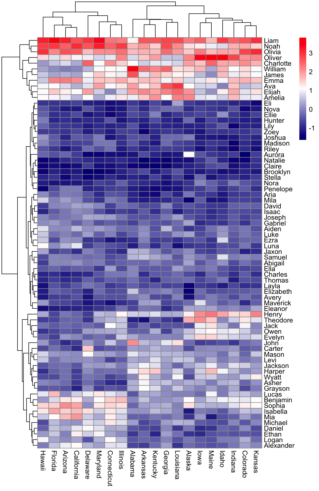
You can also run this in one line of code and not save the function
pheatmap(scaled_mat, color = colorRampPalette(c("navy", "white", "red"))(100))
You can even use custom color palettes with any HEX color codes you want. A personal favorite of mine is a blue/yellow palette from the ArchR package.
blueYellow <- c("#352A86", "#343DAE", "#0262E0", "#1389D2", "#2DB7A3",
"#A5BE6A", "#F8BA43", "#F6DA23", "#F8FA0D")
pheatmap(scaled_mat, color = blueYellow)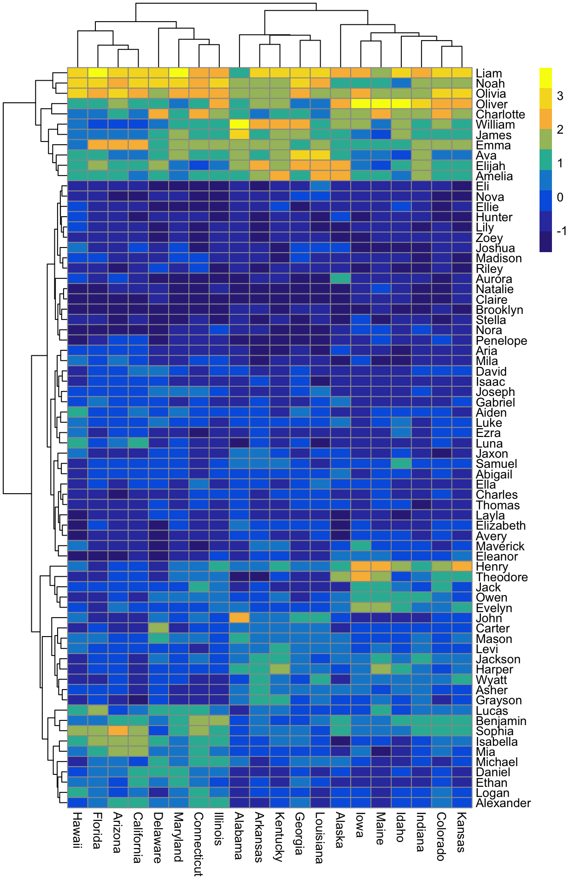
Exercise Make a heatmap with your own color palette
# TODO make the heatmap with your unique color paletteAdding annotations
We can help interpretation by adding row and column annotations to the plot. Let’s first add some row annotations showing if the name is a male or a female name. We start by making a data frame of the names and indicating if the name was from the male or female database.
names_annotation <- data.frame("sex" = c(rep("female", nrow(female_names_mat)),
rep("male", nrow(male_names_mat))),
row.names = c(rownames(female_names_mat),
rownames(male_names_mat)))
head(names_annotation) sex
Ava female
Olivia female
Emma female
Charlotte female
Harper female
Amelia femaleNote here the row names are the same as the row names of our matrix and we have one column named “sex”
We can now add this to the plot using the annotation_row. The key here is that the row names of your matrix must be the same as the row names of your data frame.
blueYellow <- c("#352A86", "#343DAE", "#0262E0", "#1389D2", "#2DB7A3",
"#A5BE6A", "#F8BA43", "#F6DA23", "#F8FA0D")
pheatmap(scaled_mat,
color = blueYellow,
annotation_row = names_annotation)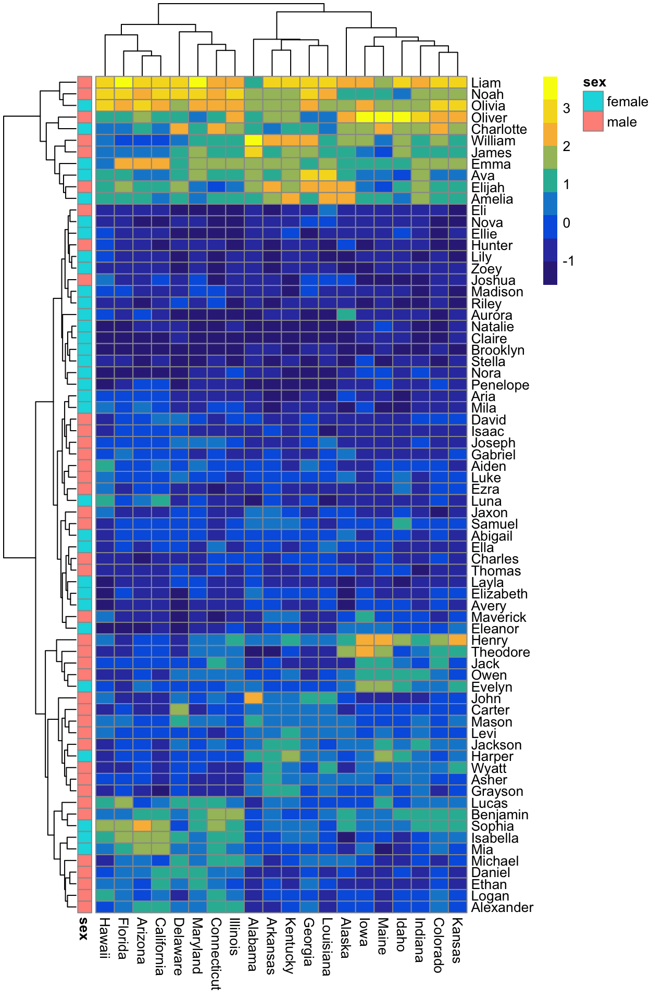
Now you can see very clearly what names were in the female database and what names were in the male database. Again, we can change the default colors by using a list object. Here the names of the list must match the column names in your data frame and the names of the colors in the list must match the levels of that column.
We can either use the name of colors:
$sex
male female
"red" "yellow" pheatmap(scaled_mat,
color = blueYellow,
annotation_row = names_annotation,
annotation_colors = all_colors)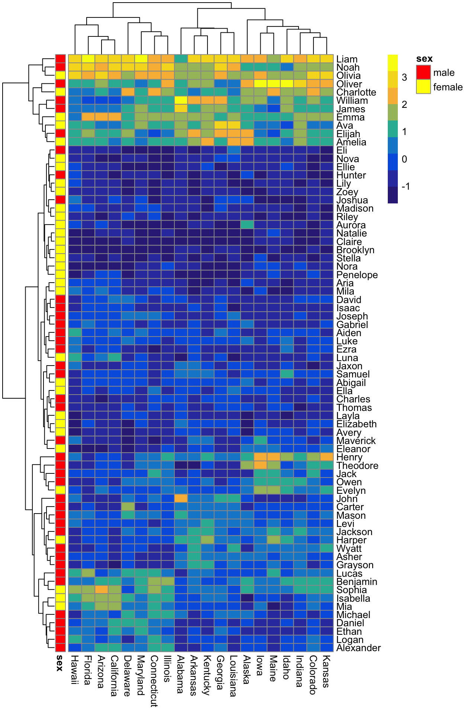
Or a HEX code:
$sex
male female
"#B067A3" "#9C954D" pheatmap(scaled_mat,
color = blueYellow,
annotation_row = names_annotation,
annotation_colors = all_colors)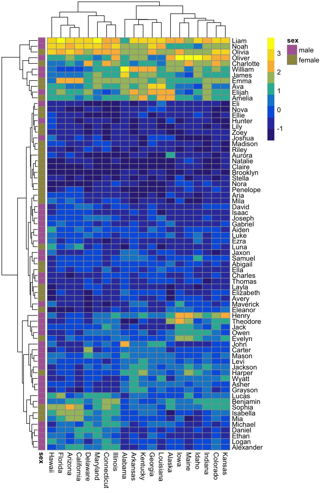
Exercise Add your own colors to the row annotations
# TODO Add your own row annotaiton colorsWe can also add annotations to the columns using the same approach. Let’s load in some of the data I’ve compiled for the states
State Location Size Density
1 Alabama South Middle 4
2 Alaska West Small 6
3 Arizona West Middle 4
4 Arkansas South Middle 5
5 California West Large 2
6 Colorado West Middle 5This table has information about the location, the size (based on population as small middle or large) and the density (on a scale of 1-6).
We first will need to reformat so that the row names are the sates. Now the row names must be the same as the column names in the matrix.
state_info <- tibble::column_to_rownames(state_info, "State")
head(state_info) Location Size Density
Alabama South Middle 4
Alaska West Small 6
Arizona West Middle 4
Arkansas South Middle 5
California West Large 2
Colorado West Middle 5We can now pass this data frame to annotation_col in pheatmap
pheatmap(scaled_mat,
color = blueYellow,
annotation_col = state_info)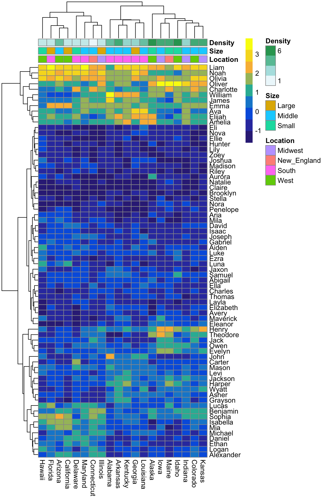
You can see that we now have three levels of annotation on our heatmap. One thing to notice is that our population density is given as a scale of colors because it is seen as a numeric score. If we instead use this as a factor, this scale will go away:
As before, we can add in our own color palettes by using a named list where the list names correspond to the column names of our data frame. Here, I’m going to use the package MetBrewer to generate palettes for me. You can see all possible palette options here
location_colors <- met.brewer("Pissaro",
n = length(unique(state_info$Location))) %>%
as.character()
names(location_colors) <- unique(state_info$Location)
location_colors South West New_England Midwest
"#4c825d" "#8cae9e" "#8dc7dc" "#0e2a4d" size_colors <- met.brewer("Navajo",
n = length(unique(state_info$Size))) %>%
as.character()
names(size_colors) <- unique(state_info$Size)
size_colors Middle Small Large
"#660d20" "#e59a52" "#edce79" density_colors <- met.brewer("Juarez",
n = length(levels(state_info$Density))) %>%
as.character()
names(density_colors) <- levels(state_info$Density)
density_colors 1 2 3 4 5 6
"#a82203" "#208cc0" "#f1af3a" "#cf5e4e" "#637b31" "#003967" all_colors <- list("Location" = location_colors,
"Size" = size_colors,
"Density" = density_colors)
all_colors$Location
South West New_England Midwest
"#4c825d" "#8cae9e" "#8dc7dc" "#0e2a4d"
$Size
Middle Small Large
"#660d20" "#e59a52" "#edce79"
$Density
1 2 3 4 5 6
"#a82203" "#208cc0" "#f1af3a" "#cf5e4e" "#637b31" "#003967" pheatmap(scaled_mat,
color = blueYellow,
annotation_col = state_info,
annotation_colors = all_colors)Finally, we can add in the annotation from the rows as well. First we can add in the colors we had before
$Location
South West New_England Midwest
"#4c825d" "#8cae9e" "#8dc7dc" "#0e2a4d"
$Size
Middle Small Large
"#660d20" "#e59a52" "#edce79"
$Density
1 2 3 4 5 6
"#a82203" "#208cc0" "#f1af3a" "#cf5e4e" "#637b31" "#003967"
$sex
male female
"#B067A3" "#9C954D" And then add the names_annotation back into the argument for annotation_row
pheatmap(scaled_mat,
color = blueYellow,
annotation_col = state_info,
annotation_row = names_annotation,
annotation_colors = all_colors)Exercise
What happens if all_colors only has some of the colors in the annotation data frames?
# TODO try making the heatmap with a list that only contains color arguments for
# some of the columns in the annotation data framesNotice how the annotation_colors argument accepts the color arguments for both the rows and the columns. The important things about this argument to color the annotation is
- It must be a list
- The names of the list must be in the columns for the
annotation_roworannotation_coldata frame - The names of the colors must match the values in the matching column
- You do not need to have all columns present in your color list - any missing columns will be given the default colors
There are also a few important aspects of the annotation data frames
1. The rownames of annotation_row must match the rownames of the matrix (although the order does not need to be the same)
2. The rownames of annotation_col must match the column names of the matrix (although the order does not need to be the same)
3. You can add as many annotations to the rows and columns that you want. You just need to include these as columns in either the annotation_row or annotation_col data frame.
Clustering
One aspect of the plots that you’ve probably noticed is dendrograms for both the rows and the columns. The clustering is done using hclustlike we did in the clustering lecture.
Just like with our clustering methods we can cut the dendrogram based on an expected number of clusters to group either the states or the names. pheatmap has a function that uses cutree to identify clusters and physically separates these clusters with a white space using cutree_rows and cutree_cols. First, we can visualize three clusters of the names.
pheatmap(scaled_mat,
color = blueYellow,
annotation_col = state_info,
annotation_row = names_annotation,
annotation_colors = all_colors,
cutree_rows = 3)Or we can visualize three clusters of the states
pheatmap(scaled_mat,
color = blueYellow,
annotation_col = state_info,
annotation_row = names_annotation,
annotation_colors = all_colors,
cutree_cols = 3)We could even visuzalize both at once
pheatmap(scaled_mat,
color = blueYellow,
annotation_col = state_info,
annotation_row = names_annotation,
annotation_colors = all_colors,
cutree_rows = 3,
cutree_cols = 3)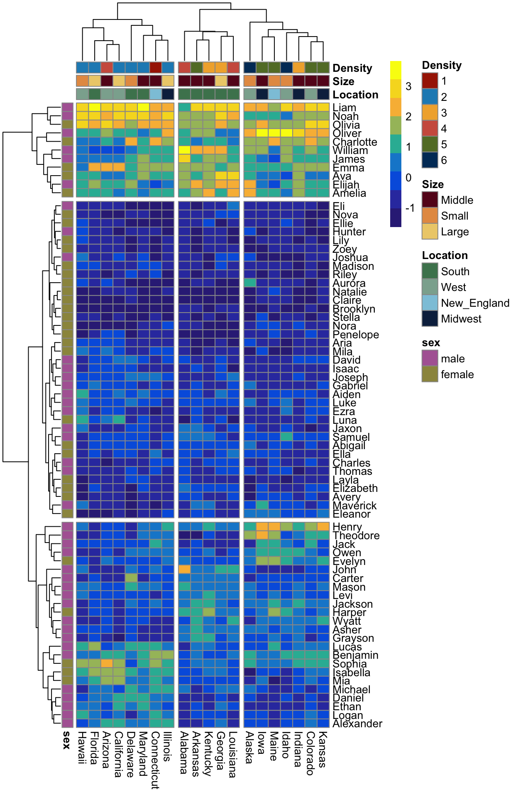
Exercise Try making the heatmap with different numbers of clusters. What number of clusters makes the most sense?
# TODO Make the heatmap cutting to make different numbers of clustersAs with using cutree ourselves, you can pick any number of clusters to visualize in this way.
In addition to visualizing these clusters, we can also pull the clustering information out of the heatmap object. First we can save the plot to a variable. Right now we are setting silent to TRUE so the heatmap isn’t drawn
heatmap <- pheatmap(scaled_mat,
color = blueYellow,
annotation_col = state_info,
annotation_row = names_annotation,
annotation_colors = all_colors,
cutree_rows = 3,
cutree_cols = 3,
silent = TRUE)
names(heatmap)[1] "tree_row" "tree_col" "kmeans" "gtable" The hclust object for the row are in tree_row and the hclust object for the column are in tree_col
We can plot just the dendrogram as we did previously
plot(heatmap$tree_col)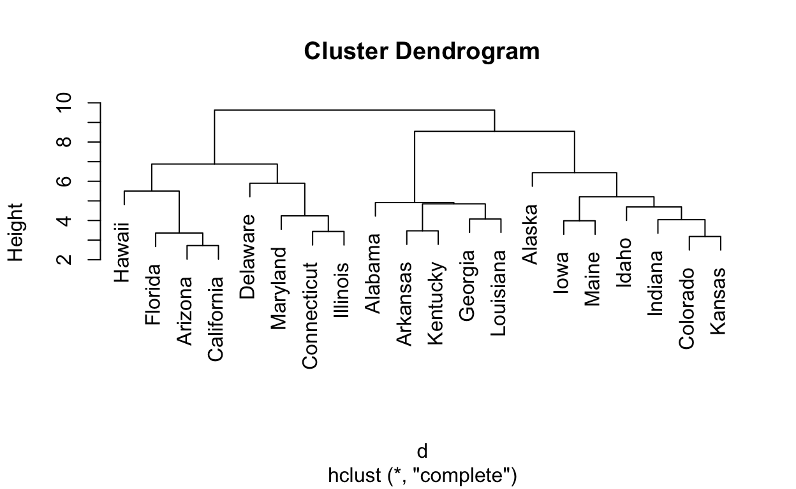
plot(heatmap$tree_row)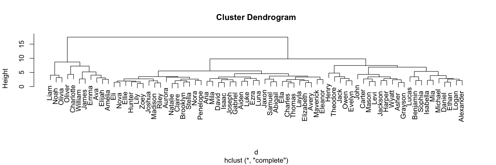
We can also now use cutree on these hclust objects in the exact same way we did in the clustering lecture to pull out clusters
Columns:
cutree(tree = heatmap$tree_col, k = 3) Alabama Alaska Arizona Arkansas California
1 2 3 1 3
Colorado Connecticut Delaware Florida Georgia
2 3 3 3 1
Hawaii Idaho Illinois Indiana Iowa
3 2 3 2 2
Kansas Kentucky Louisiana Maine Maryland
2 1 1 2 3 Rows:
cutree(tree = heatmap$tree_row, k = 3) William James John Elijah Noah Liam Mason
1 1 2 1 1 1 2
Oliver Henry Jackson Samuel Jaxon Asher Grayson
1 2 2 3 3 2 2
Levi Michael Carter Benjamin Charles Wyatt Thomas
2 2 2 2 3 2 3
Aiden Luke David Owen Daniel Logan Joseph
3 3 3 2 2 2 3
Lucas Joshua Jack Alexander Maverick Gabriel Ethan
2 3 2 2 3 3 2
Eli Isaac Hunter Ezra Theodore Ava Olivia
3 3 3 3 2 1 1
Emma Charlotte Harper Amelia Elizabeth Evelyn Isabella
1 1 2 1 3 2 2
Ella Avery Abigail Sophia Layla Mia Madison
3 3 3 2 3 2 3
Lily Ellie Nova Eleanor Zoey Brooklyn Riley
3 3 3 3 3 3 3
Nora Aria Mila Stella Natalie Luna Penelope
3 3 3 3 3 3 3
Aurora Claire
3 3 Exercise What names are the most similar? What states are the most similar?
Another option is to remove the clustering all together using cluster_rows and cluster_cols
pheatmap(scaled_mat,
color = blueYellow,
annotation_col = state_info,
annotation_row = names_annotation,
annotation_colors = all_colors,
cluster_rows = FALSE,
cluster_cols = FALSE)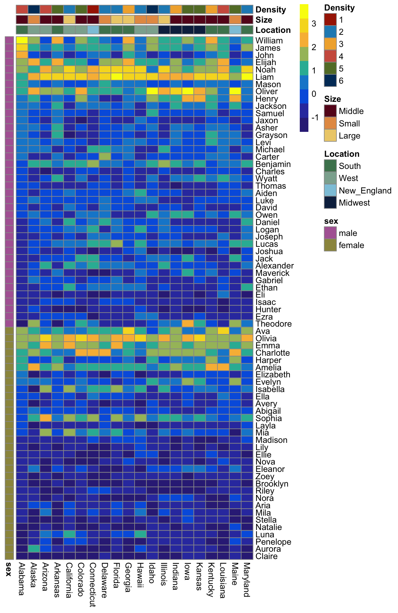
If we don’t cluster, the order of the rows and columns is taken directly from the order of the matrix. We can change to alphabetical order as follows
scaled_mat_ord <- scaled_mat[order(rownames(scaled_mat)), ]
pheatmap(scaled_mat_ord,
color = blueYellow,
annotation_col = state_info,
annotation_row = names_annotation,
annotation_colors = all_colors,
cluster_rows = FALSE,
cluster_cols = FALSE)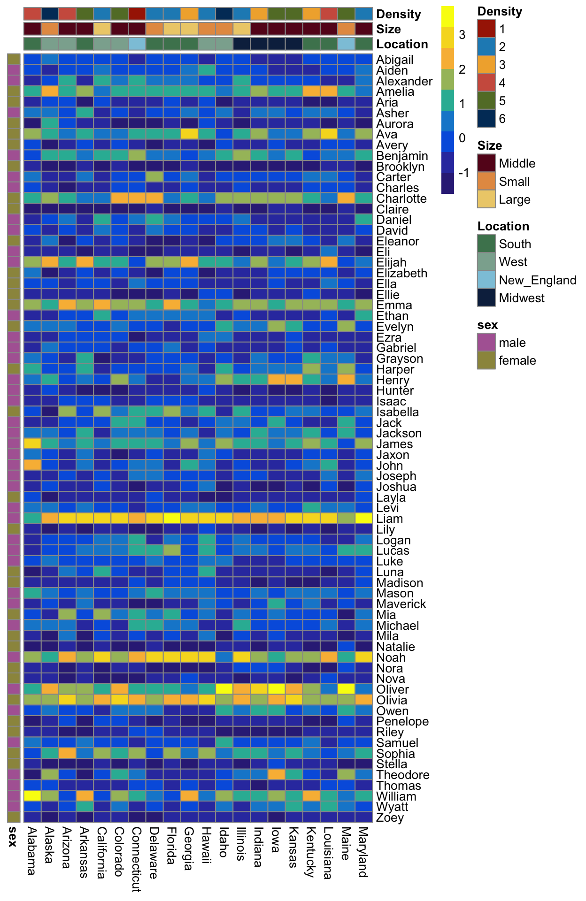
We could even order the states by the density
state_info <- state_info %>%
dplyr::arrange(Density)
scaled_mat_ord <- scaled_mat[ , order(match(colnames(scaled_mat),
rownames(state_info)))]
pheatmap(scaled_mat_ord,
color = blueYellow,
annotation_col = state_info,
annotation_row = names_annotation,
annotation_colors = all_colors,
cluster_rows = FALSE,
cluster_cols = FALSE)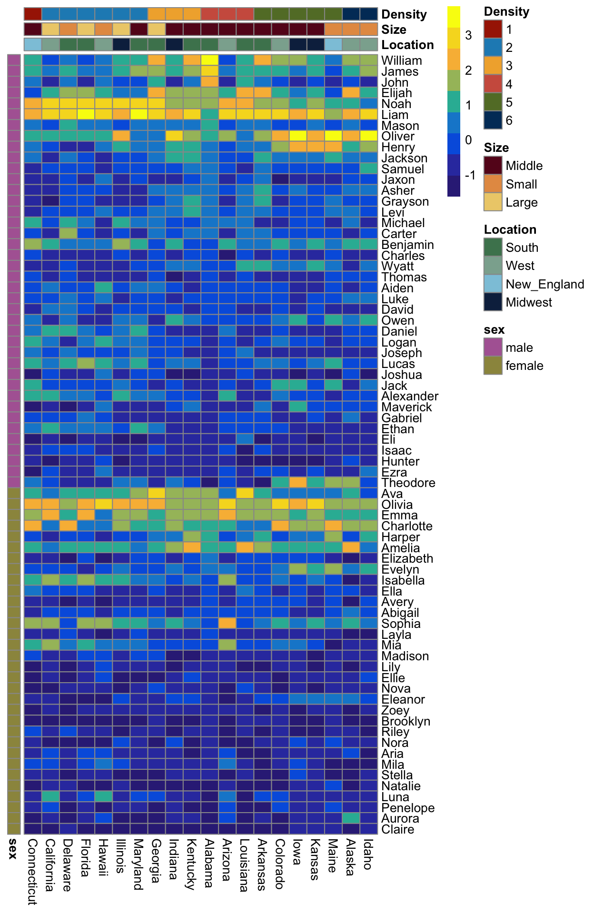
Exercise Order the heatmap by density, but cluster the names
# TODO order the heatmap by density but cluster the namesExercise Order the heatmap by location, but cluster the names
# TODO order the heatmap by location and cluster the namesRemove column and row names
One other helpful way to adjust your heatmap is to remove the row and column names. You can control if the row and column names are seen using show_rownames and show_colnames
pheatmap(scaled_mat,
color = blueYellow,
annotation_col = state_info,
annotation_row = names_annotation,
annotation_colors = all_colors,
show_rownames = FALSE,
show_colnames = FALSE)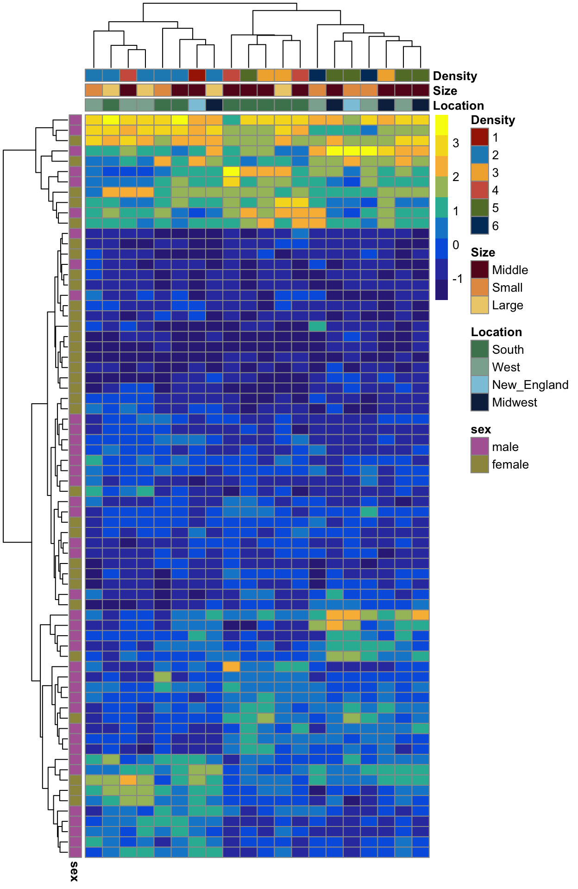
Other aesthetics
There are many possible adjustments you can make, we’ve just gone through the adjustments I use the most often. To see all possible arguments see ?pheatmap
Acknowldgements and additional references
The content of this class borrows heavily from previous tutorials:
I’m a biologist, why should I care?
- Heatmaps are common tools to visualize data
- They are frequently used for sequencing data - RNA-seq, scRNA-seq, ATAC-seq
- They are a good way of showing lots of data
- Because of the scaling, they can be misleading so it’s good to know how to interpret them
- You will likely encounter heatmaps in papers that you read. My goal is to improve your understanding of the techniques so you can better interpret them on your own